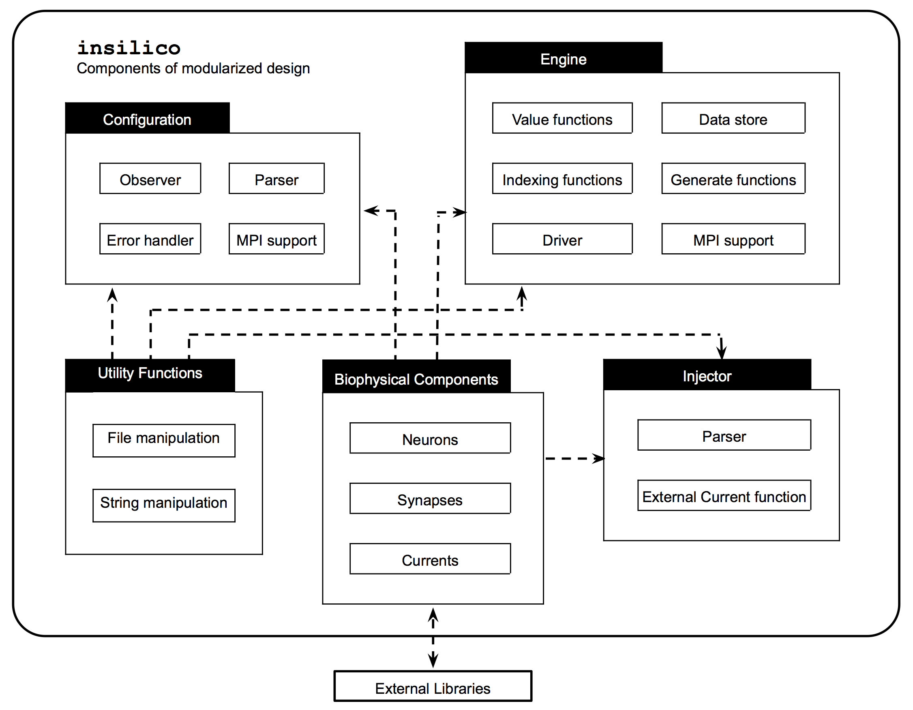
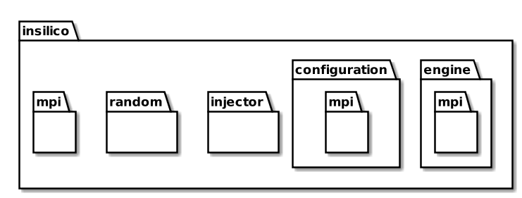
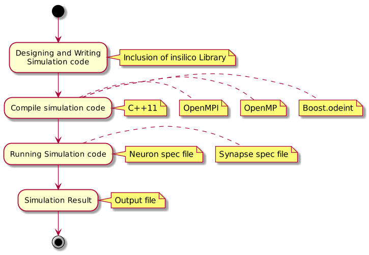
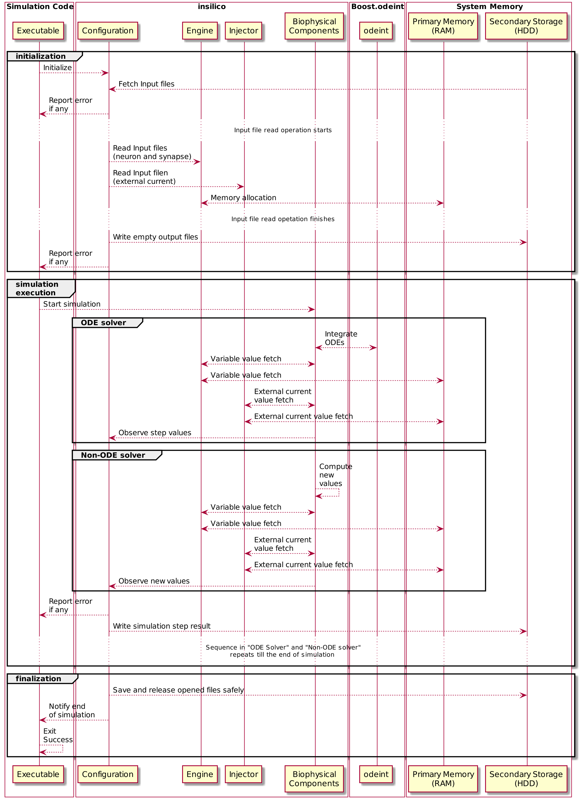
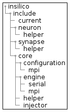
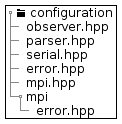
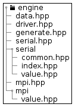
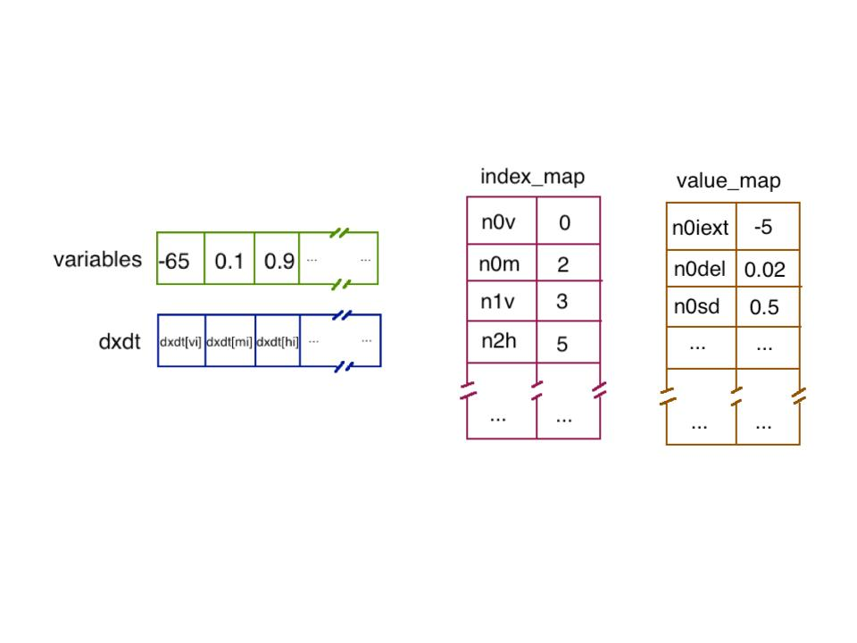

|
Introduction insilico is C++ library for Computational Neuroscience Simulation. Developed using C++11, a modern language standard for C++. insilico is designed to address and fulfill Computational Neuroscience Simulation requirement and strives for keeping simulation writer focused on simulation details, without getting diverged due to several details of programming language. To achieve this library provides an easy-to-use application programming interface (set of classes and functions, shortly API) to model and interact with biophysical components involved in simulation. Utmost care has been taken to support simulation writer write a fine-grained, controlled simulation adhering to biophysical properties. Library Design
 insilico has been designed and developed in modular fashion. Every model is extracted out of identified work and roles to assign to complete that role. Flexibility achieved due to such modular design allows one to make change in one component of the library and incur minimum impact on other component. Figure 1 shows various modules of insilico and their independent components. Implementation Scope and Components
 The implementation of the above design was possible by properly scoping various components under their respective class of work. Different scopes and component responsibilities are defined in insilico. Let us understand each of them in detail. Please refer Figure 2 to visualize. insilico::configuration Configuration performs tasks related to efficient file handling and resource allocation and deallocation. File handling features such as read input files for simulation, creating and writing output file for simulation result, and opening and closing these files in all instances of successful and unsuccessful simulation completion. Configuration has it’s own MPI support implementation under insilico::configuration::mpi scope. It does a job of distributing responsibilities among different MPI processes involved in reading and writing input and output files respectively. insilico::engine Engine is a insilico’s runtime memory management and data handling unit. It is responsible for serving data required for simulation at runtime in the desired form. It has predefined set of API to understand Computational Neuroscience specific data and their relationships. Engine also has it’s own MPI support implementation under insilico::engine::mpi. It plays a vital role of abstracting out the synchrony among the MPI processes during critical operations like data fetch and updates keeping data integrity and avoid data races. insilico::injector Simulation can sometime pose a need for supply of external current at different level of requirements. For instance, an external pulse for few seconds, a constant DC, a spike of current for microseconds, and so on. All these needs can be satisfied by the insilico’s Injector. insilico::random Random is insilico’s utility class. Provides a feature of uniform random number generation using C++11 standard library <random> header. insilico::mpi MPI initialization sets up few constant values throughout execution of the code along with few common tasks related to insilico specific MPI support implementation are covered by this component scope. Using insilico
 The basic usage and execution strategy of insilico is shown in figure 3. As the figure depicts, insilico library classes and functions can be used by simply including insilico as a source and requires
C++11 standard library, OpenMP, OpenMPI and Boost.odeint gets linked to the simulation source to generate simulation executable. Running the simulation executable accepts runtime options for input and output files, giving out the simulation result into a specified output file. Figure 4 attempts at demonstrating the internal steps that simulation takes during “initialization”, “simulation execution” and “finalization” phases.
 Compiling simulation code insilico comes bundled with build script for ease of compilation. Makefile, which is used by make to build a prescribed series of dependent compilations and linkings, is provided in the home directory of the project source. Run the following command on terminal to, where SOURCE should be assigned with your simulation file which contains main(). make SOURCE="path/to/source/file.cpp" Executing simulation code Run the following command on terminal to know the expected input and output file runtime options. insilico.out -o <output_file>.csv -n <neuron_file.isf> -s <synapse_file.isf> -e <external_file.isfc>
Accordingly provide the files with proper runtime option. insilico library file structure
(a) 
(b) 
(c)  insilico provides library classes and functions into header sources, These header sources are all situated under include directory. Library is currently divided into five different directories. Let us understand them in detail with their respective functions: Core Entire simulation support, execution and management functions Biophysical components Libraries collection of established set of neuron, synapse and current Doc Offline documentation, comes bundled with library source for reference Examples Collection of neuronal network examples crafted using insilico Script Utility scripts provided to assist simulation programmer Figure 5 shows all the directory structures explained here for visualization. Memory management and data access mechanism Neuronal simulation can be a memory and compute intensive problem. insilico tries to solve both these problems efficiently. Computation intensive nature of problem is majorly due to integration of ordinary differential equations (ODEs) involved in the representation of dynamics of neuronal networks. insilico uses open source ODE integration library, Boost.odeint to efficiently solve problem related to computation, prominently integration. Boost.odeint has well established itself in space of ODE solver and has been ported to several language due to its open source nature. It is properly documented, easy to use, robust and feature-full. Now, let us learn about insilico’s way of solving the memory problem. insilico’s memory access and data store is mainly driven by the requirements of integrator in use. To generalize, integrator, needs a initial state vector of variables in ODE and participating in the process of integration, set of ODEs (rhs) for each of these variables to be integrated and mechanism to update the variables and parameters after each step of integration at proper vector locations. The locations can vary from vector to vector depending on the network size and amount of detailing and scale of the simulation. So, tracking this location for each and every variable can be tedious and non-intuitive. insilico tries to solve this my keeping a mapped lookup table accessible at O(log N) worst case complexity and stored in optimum way. As shown in figure 6, for every variable or parameter associated with a neuron or synapse is mapped to a key:value pair, stored and accessed using C++ inbuilt proven hashing method.
 This gives insilico advantages of optimized memory store-access and pre-determined memory allocation. This also prevents execution time required for runtime memory re-allocation. Highlights
Specification for input files insilico Simulation Specification File format (ISF) Primary usage of this input file is in specification of Neuron and Synapse input. Line ending with a semi-colon represents a single Neuron or Synapse. Synapse input file is optional argument if there is no synapse in the simulation. Both the above parameter files has their specification as comma separated key:value pairs in the following format on each line in the file.
dxdt:<ODE-vars> denotes the count of ODE variables, all the variables for ODEs in the simulation code should satisfy their count and the value replacing <ODE-vars> and those many variables should follow immediately after ('dxdt' is a library keyword, <ODE-vars> should be replaced by positive integer) <var1>:<init> to <varN>:<init> variables to be used in simulation with initial values (<var1> to <varN> should be replaced by desired variable name and <init> should be replaced by initial values of the respective variables), in the case of Synapse file variables 'pre' and 'post' are mandatory with presynaptic and postsynaptic neuron indices as their values respectively insilico Simulation Specification File format for Currents (ISFC) Primary usage of this input file is in specification of External current input to be injected into Neurons or their compartment. This input file is optional. Use the following insilico Simulation File format for current (isfc).
time String to signify the header of the input file neuron-id-1 to neuron-id-n List of Neuron IDs (simulator specific ids, which are read from Neuron file and starts from 0). A given ID can be repeated to denote the different compartment of the same neuron. And this should be handled by programmer. tstart, +tstep and tend Increasing time of simulation run. Simulation starts at 'tstart', with increments of 'tstep' and ends at 'tend'. cur-val-1 to cur-val-n, cur-val-1m to cur-val-nm External current for a specific neuron in its column for all neurons available in header and for all time steps from 'tstart' to 'tend'. Specification for output file Simulation results will be written to this file as comma separated values (CSV) in following format for each line of output.
time-step current time-step variable-1 to variable-n all the variable values that are provided to insilico’s observer Code Examples Example 1: Current due to Sodium ion (Na+) channel Following code demonstrates the computation of current flowing through Na+ channel as given by Hodgkin-Huxley Neuron model. It has it’s own ODE for gating variables ‘m’ and ‘h’, computation and storage of current value during the given integration step.
// Na+ current class Figure 7. INa current using insilico Example 2: Hodgkin-Huxley Neuron model Following code demonstrates HH Neuron and its interaction with component Na+, K+ and Leak channels. K+ and Leak channels can be written similar to the example code given for Na+ channel above.
// Hodgkin-Huxley Neuron Figure 8. Hodgkin-Huxley neuron using insilico |
|||||||||||||||||||||||||||||||||||||
|
Copyright © 2014-2015 Collins Assisi Lab, IISER, Pune. All Rights Reserved. (Last Updated: 29th April, 2015) |